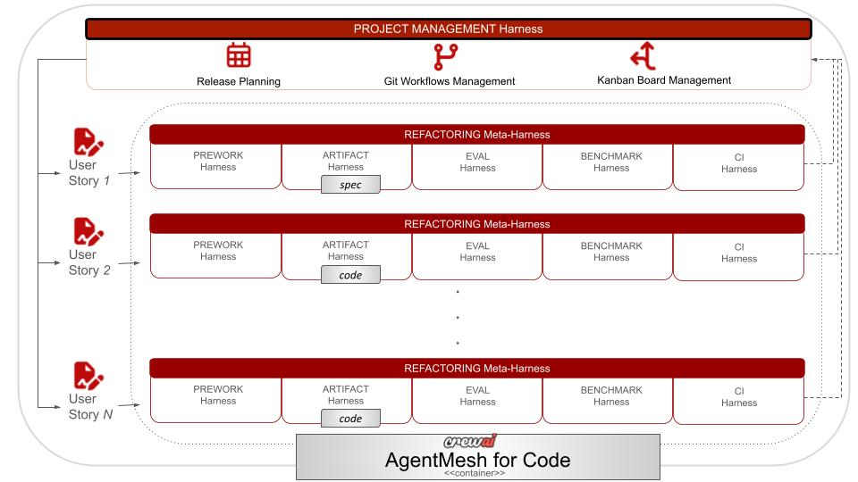

🧭 Overview
Author: Omotola Awofolu
SWEMesh (also called "Agent Mesh for Software Modernization") is an agent mesh for coding agents. It demonstrates a pattern for continuous legacy code refactoring built on CrewAI.
SWEMesh uses a federated, multi-harness, multi-agent system (MAS) to support iterative agent-driven development for brownfield applications.
It provides an end-to-end architecture for building agentic software factories.
Problem Statement
Legacy enterprise codebases are typically characterized by the following:
- Incomplete, inaccurate, and/or missing documentation and test coverage
- Lack of understanding of implicit business logic (resulting in high upfront "code comprehension tax")
- Extensive technical debt, including vulnerable dependencies, spaghetti code, quiet bugs, etc
- Niche and/or legacy languages with little or no benchmarking standards and ill-matched code quality metrics
In turn, modern approaches for handling this involve a hybrid of one or more methods. Some of them include:
| Approach | Pros | Cons |
|---|---|---|
| Coding agent-only |
|
|
| Direct translation |
|
|
| AST / CFG based refactoring |
|
|
| Domain-specific finetuning and/or machine learning based |
|
|
| Static rules engines |
|
|
| Manual |
|
|
In other words: as of this writing, there is no one-size-fits-all approach for legacy refactoring. Every paradigm has its pros and cons. An agent mesh adopts a loosely coupled integration pattern that can wrap different agents, agent harnesses, and tools. It can address some of these refactoring challenges by distributing responsibilities across specialized agents and enforcing iterative development with explicit artifacts and mixed human-AI gates.
Agent Mesh for Coding Agents
Here is a high-level overview of SWEMesh showing the interaction between the human team and the AI (agentic) team:

The following diagram shows how the SWEMesh lifecycle aligns with the Software Development Lifecycle (SDLC):
{kind=link}

Definition of Terms
Agent Mesh
An agent mesh is the backbone of an agentic system. While there is no single definition of an agent mesh, it is broadly understood as a loosely-coupled fabric that allows agents from different, independent domains to collaborate on a shared task.
Federated Agent Mesh
A federated agent mesh uses a centralized governance layer to manage agents that are fully independent of one another. These agents could be distributed over a network, or they could be colocated in a decentralized architecture.
Harness
(In progress)
Meta-harness
(In progress)
Multi-agent system (MAS)
(In progress)
Iterative agent-driven development
(In progress)
Agentic Software Factory
(In progress)
Overview of Concepts
The Agent Mesh approach for Coding relies on the premise that software modernization at scale is iterative, incremental, interconnected, and treats refactoring as a product.
-
Software modernization is iterative. This means that software modernization is a cycle, not simply a linear process with a destination. A cycle does not have a definitive end; rather, it requires a feedback loop to determine whether the cycle is complete, or if it needs to be repeated. Each iteration of software modernization is responsible for a specific cycle in the end-to-end process.
-
Software modernization is incremental. This means that software modernization cycles use a phased approach, not a Big Bang approach. Each cycle handles a specific bounded context relative to the code.
-
Software modernization is interconnected. This means that software modernization is not a siloed process. Software modernization relies on an entire software factory ecosystem for its successful delivery. For example, this includes project management, testing, evaluation, review and continuous integration, not just coding. Hence, the software modernization process depends on multiple artifacts: not just code, but also documentation, tests, evaluations, CI pipelines, migration plans, etc.
-
Software modernization treats refactoring as a product. In the Data Mesh paradigm popularized by Zhamak Deghani, data is a "product, not a byproduct". In this approach, data is no longer treated as some undefined output of pipelines; instead, data is a contract-driven output with ownership, structure, and the ability to be discovered and reused. Software modernization at scale treats the refactoring process the same way. Rather than treating refactoring as a series of one-off tasks, it includes traceability, codified rules, spec-driven development, evaluations etc. to support the repeatability and reusability of the process for future iterations.
In light of the above:
- The end-to-end process is the complete, flattened-out sequence of tasks managed by the Agent Mesh from start to finish.
- The Agent Mesh orchestrates a sequence of agent-driven and tool-driven workflows. A workflow defines a single phase of the process. Each workflow is used to generate artifacts for the overall process. A workflow can occur at any point in the process, multiple times, or not at all. This approach aligns with the non-linear nature of iterative development.
- Each step in the process is an iteration. An iteration represents an instance of a specific workflow. A workflow is itself a multistep subprocess. The Agent Mesh is designed to support iterative development by allowing the user to run multiple iterations in a sequential manner.
- In harness engineering, a harness refers to the entire infrastructural backbone required for an AI agent to run: not just the LLM, but also tools, memory, middleware, control loops, etc. Along those lines, in the Agent Mesh, a harness is a component that orchestrates the execution of a workflow iteration. A harness can be a standalone, or it can contain other harnesses ("meta-harness"). A harness can run in AI mode, static mode or both. A harness that supports AI mode is an agent-driven harness, while a harness that supports static mode is a tool-driven harness.